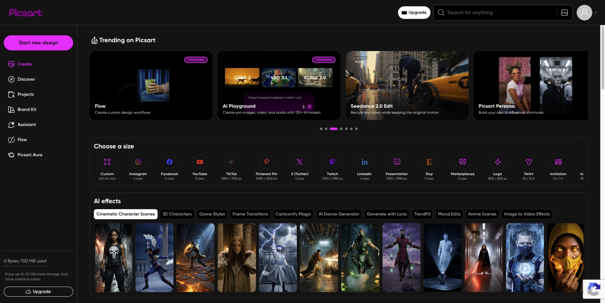
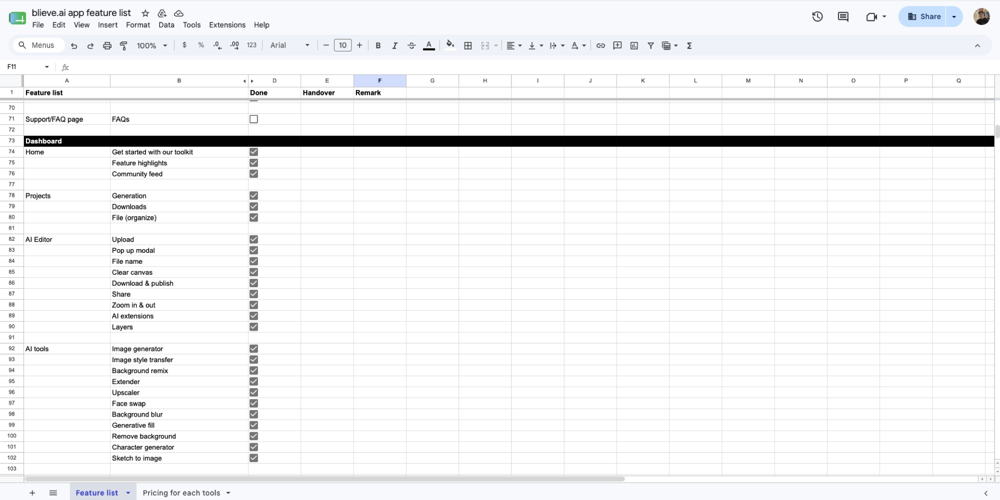
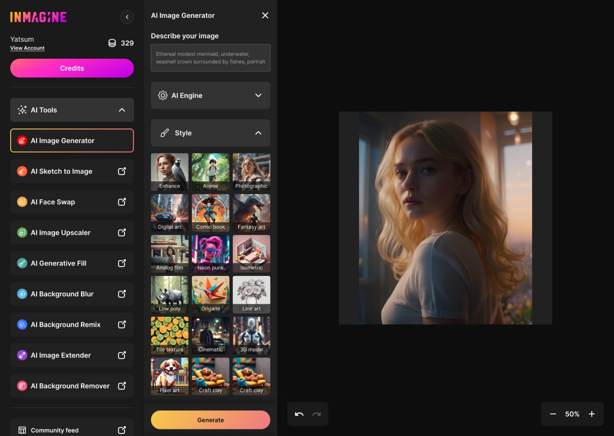
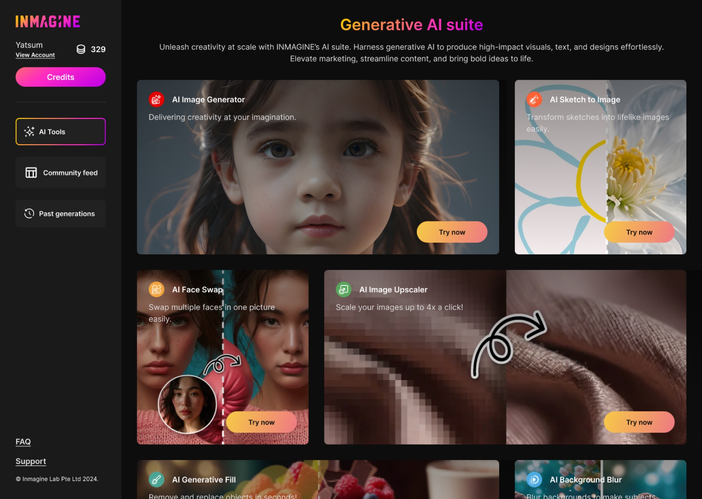
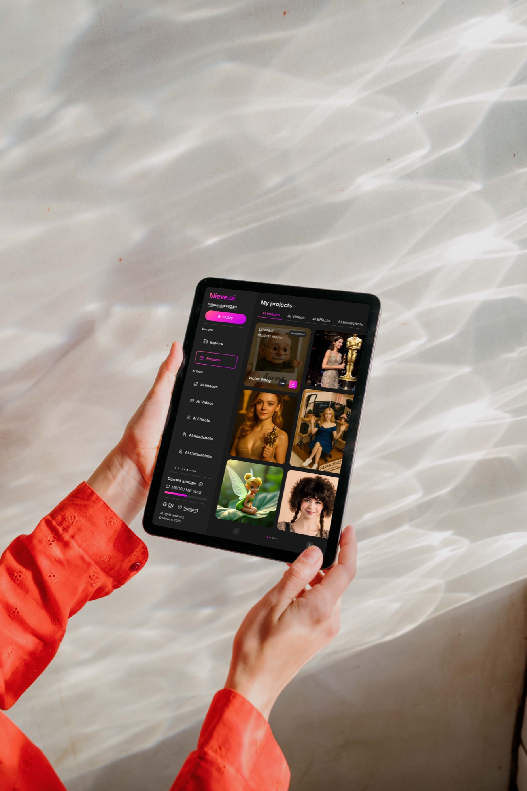
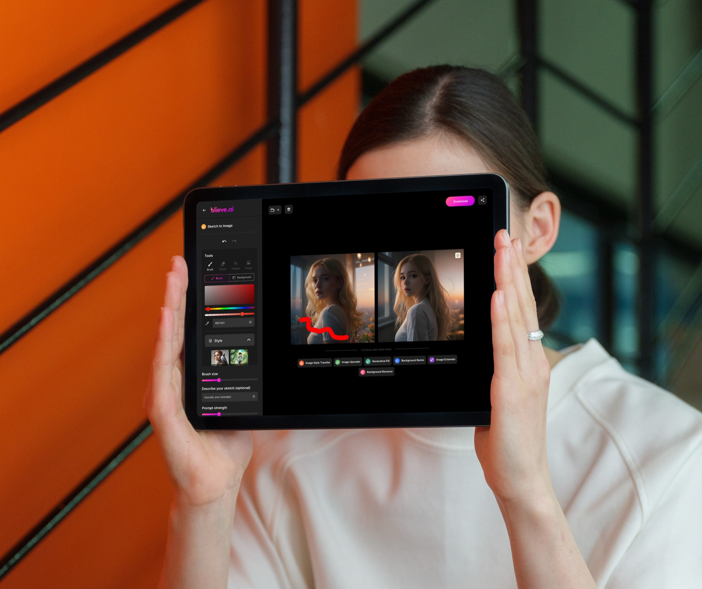

Blieve.ai — Designing a Unified AI Creative Ecosystem
Blieve.ai is an AI-powered creative ecosystem that combines image generation, video creation, AI effects, AI headshots, and AI companion features into a single connected platform.
The project focused on consolidating multiple tools previously separated across the 123RF ecosystem into a more seamless and scalable experience, allowing users to create, edit, and manage content more efficiently within one workflow.
My Role
Product Designer (UI/UX)
Responsible for:
- UX strategy and workflow design
- UI/UX design across the platform
- AI tool experiences
- Authentication and onboarding flows
- Checkout and subscription experience
- Design consistency across products
- Responsive web experience
- Design explorations and interaction patterns
Goals
The project focused on creating a more connected AI ecosystem that felt:
- Easier to navigate
- Faster to learn
- More approachable for non-technical users
- More scalable for future AI tools
- More consistent across workflows
The goal was not only to introduce AI capabilities, but to simplify how users interact with them.
Background
Blieve.ai was created to unify multiple AI-powered creative tools into one seamless platform experience.
Previously, users interacted with separate products that had disconnected workflows and inconsistent interfaces. The goal was to redesign the experience into a connected ecosystem where users could move naturally between generating, editing, transforming, and managing content without friction.
The platform includes:
- AI image generation
- AI effects
- AI headshots
- AI companion features
- Image-to-video workflows
- Creative asset management
I was responsible for designing the end-to-end product experience, including the platform structure, AI tools, onboarding experience, authentication flows, checkout process, and overall UI consistency.
Problem
Although the platform offered powerful AI capabilities, the experience initially felt fragmented across multiple tools and workflows.
Users often needed to:
- Switch between separate interfaces
- Relearn different interaction patterns
- Repeat actions across workflows
- Navigate overly complex settings
- Manage inconsistent user experiences
This created unnecessary friction and slowed down the creative process, especially for casual creators and non-technical users.
The challenge was not only introducing more AI features, but creating a smoother and more connected experience between them.
Before vs After
Solution
Instead of treating every AI feature as an isolated product, I focused on designing a unified workflow across the platform.

The experience was structured to help users move more naturally between:
- Generating
- Editing
- Enhancing
- Transforming
- Exporting
Key design directions included:
- Consistent UI patterns across all tools
- Simplified navigation and hierarchy
- Guided workflows for beginners
- Scalable layouts for future AI features
- Reduced cognitive load during creation
- Progressive disclosure for advanced settings
The goal was to make advanced AI tools feel more approachable, intuitive, and connected within a single ecosystem.
Discovery
During the discovery phase, I reviewed how existing AI creative platforms structured their workflows, interactions, and feature hierarchy.


I also conducted competitor research to better understand:
- Navigation patterns
- Tool organization
- AI interaction models
- Content generation workflows
- User onboarding approaches
A common pattern quickly became clear:
- Many AI platforms were feature-heavy but disconnected
- Interfaces often became overwhelming very quickly
- Users cared more about outcomes than technical complexity
- Switching between tools disrupted creative momentum
One important insight was that users rarely think in terms of individual “tools.”
Instead, users think in terms of outcomes: “I want to create something quickly and easily.”
This shifted the design direction from feature-first to workflow-first.
Competitor Research
Midjourney
- High-quality AI image outputs
- Strong creative community ecosystem
- Simple prompting experience
- Workflow heavily depends on Discord
- Difficult for beginners to navigate
- Limited structured editing workflow
Canva AI
- Beginner-friendly interface
- Strong all-in-one creation ecosystem
- Familiar editing experience
- AI features feel separated from the main workflow
- Limited advanced AI customization
- Interface can become crowded with features
Runway
- Powerful AI video generation capabilities
- Professional creative workflow tools
- Strong timeline-based editing experience
- Complex interface for new users
- Steeper learning curve
- Navigation can feel overwhelming
Research
The research focused on simplifying creative workflows while keeping the platform scalable for multiple AI-powered experiences.

Key observations included:
- Users preferred guided flows over complex dashboards
- Clear hierarchy reduced hesitation during creation
- Familiar interaction patterns improved confidence
- Progressive disclosure worked better for advanced controls
- Consistency across tools improved overall usability
The biggest opportunity was creating a connected ecosystem rather than designing every feature independently.
Challenges
One of the biggest challenges was maintaining consistency across multiple AI tools while still allowing each feature to have its own flexibility and functionality.


Since the platform continuously evolved with new AI capabilities, the design system also needed to remain scalable enough to support future expansion without making the experience feel cluttered or overwhelming.
Balancing simplicity and flexibility became a key part of the design process throughout the project.
Exploration
Multiple design directions were explored before finalizing the platform structure and workflow experience.


Explorations included:
- Tool-based navigation vs workflow-based navigation
- Minimal dashboard vs feature-heavy layouts
- Split preview layouts vs single canvas experiences
- Simplified controls vs advanced AI settings
The final direction focused on:
- Guided workflows
- Cleaner visual hierarchy
- Faster creation flow
- Reduced decision fatigue
- Better scalability for future tools
This helped create a more approachable experience while supporting a growing ecosystem of AI-powered features.
Design System
To maintain consistency across the platform, I established reusable UI patterns and scalable component structures that could support multiple AI workflows while keeping the experience visually cohesive.

This included:
- Consistent spacing and layout behavior
- Reusable card and modal patterns
- Unified form interactions
- Shared navigation structures
- Scalable component behaviors across tools
The system helped streamline future feature expansion while maintaining a familiar user experience across the platform.
Design
The final design focused on clarity, consistency, and scalability across the platform.
Key design decisions included:
- Consistent layouts across AI tools
- Centralized creation experience
- Simplified onboarding and login flows
- Streamlined checkout experience
- Modular UI structure for future expansion
- Progressive disclosure for advanced settings
Every interface was designed to reduce friction and help users focus more on creating rather than learning complicated workflows.



Outcome
The final platform created a more connected and scalable AI ecosystem that simplified workflows across multiple tools while improving consistency throughout the user experience.

By unifying previously separated experiences into a single platform, users could move through workflows more naturally without needing to constantly switch contexts or relearn interfaces.
The project also established a stronger design foundation that could scale alongside future AI features and product expansion.
Key Takeaways
Designing Blieve.ai taught me that successful AI products are not only about adding more features, but about creating clarity between them.
One of the biggest lessons from this project was understanding how important workflow thinking is within AI products. Users rarely focus on technical complexity or individual tools. Instead, they care about achieving outcomes quickly and smoothly. Because of this, simplifying transitions between workflows became just as important as the features themselves.
This project also reinforced the importance of consistency within rapidly evolving products. As more AI capabilities were introduced, maintaining predictable interaction patterns and scalable UI structures became critical in preventing the experience from feeling overwhelming.
Another key learning was designing for scalability. Since the platform continuously evolved with new features and workflows, the design system needed to remain flexible enough to support future expansion while still feeling cohesive and familiar to users.
Overall, this project strengthened my approach to designing AI products with a stronger focus on:
- Workflow clarity
- System consistency
- Scalable UI architecture
- Reducing cognitive load
- Designing for both beginners and advanced users